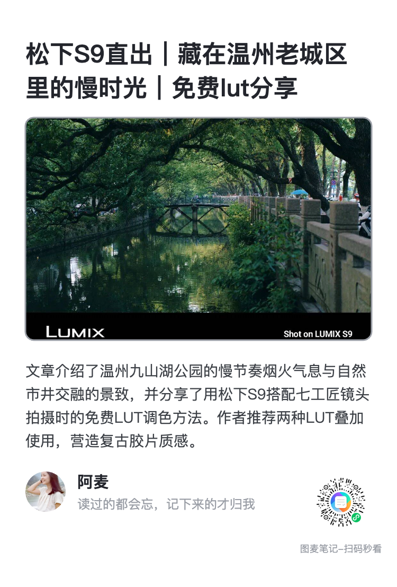
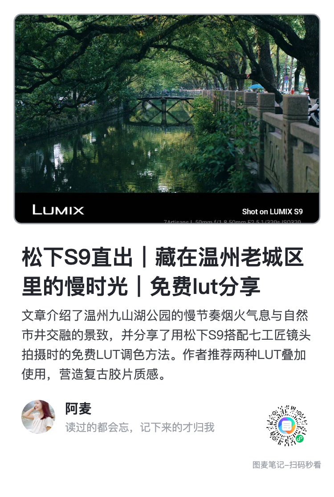

① 推窗白底
id: sashWhite ｜ 名字: 推窗白底 ｜ 750 × 1108
大标题打头 → 中间一张带灰边的照片当窗 → 摘要 → 一句话＋名字＋二维码。
- 照片：420 高、圆角 14、外面一枚 3 宽灰边
- 标题最多 3 行（46/64），摘要最多 5 行（28/44）
- 小样高：中文 956／英文 1128（有图无图两态同高）
他更正的那一句：「你理解错误，我白底是指整个卡片模板白底，不是图片加白底。」
⇒ 白底落在整张卡上（实测四角与底行都是 #FFFFFF，不再吃分类那档纸色）；
灰边框落在照片那一圈（实测 #9A9EA6，就是字典里那枚 muted，3 宽）；
上一稿照片外面那圈 18 的白衬撤掉。红框里那两行（分类·来源·日期／标签）仍照上一句撤着。
10-19卡片白框两稿/）是我读错了主体出的，别挑它。
文件留着没删（回滚点 4c48fad）——如果"卡纸装裱"那个样子你其实想要，说一声我接着走。
backend/seed/poster_extra/ → 跑流水线 → 开闸灌库」，后三步各要单独点头。

id: sashWhite ｜ 名字: 推窗白底 ｜ 750 × 1108
大标题打头 → 中间一张带灰边的照片当窗 → 摘要 → 一句话＋名字＋二维码。

id: topWhite ｜ 名字: 满幅白底 ｜ 750 × 1116
照片顶到最上面（左右各留 32）→ 标题 → 摘要 → 一句话＋名字＋二维码。
paperOf(分类)，深色那一档是 #55625C；可摘要用的是全局 body #3C4046、
署名名字用的是 ink #23252C（signRow 没显式给 onDark，默认按浅底走）。
实测对比：摘要 1.63:1、名字 2.40:1 ⇒ 笔记分类是宝蓝／草绿／紫／未分类那几档时，那两行基本读不出来。
我给他看的两张图用的都是浅分类（宣纸那一档），所以这个洞在图上看不见。signRow 显式写 onDark: false。
这一处不是我特意去修的，是"整卡白底"这个要求本身把它顶掉了——底不再随分类变，字色就不可能配错底。qrSticker 传一枚浅灰底托（offset 那一栏）即可，
还是配方里的一个数＝不发版。drawCover 这一种铺法）：满幅那一版底部正好把照片自带的一行参数小字切成半截。
要"整张图完整显示"得包内加模式参数＝真发版，这一稿做不到。recipeSource 都回 remote；合并列表 10 包内 + 2 新 = 12 套。storage=""、wx.request 换回真的。验-模板配方等价 960 组 0 处不同。#FFFFFF；照片左边一行 #FFFFFF → #CDCFD3 → #9A9EA6 → 照片。